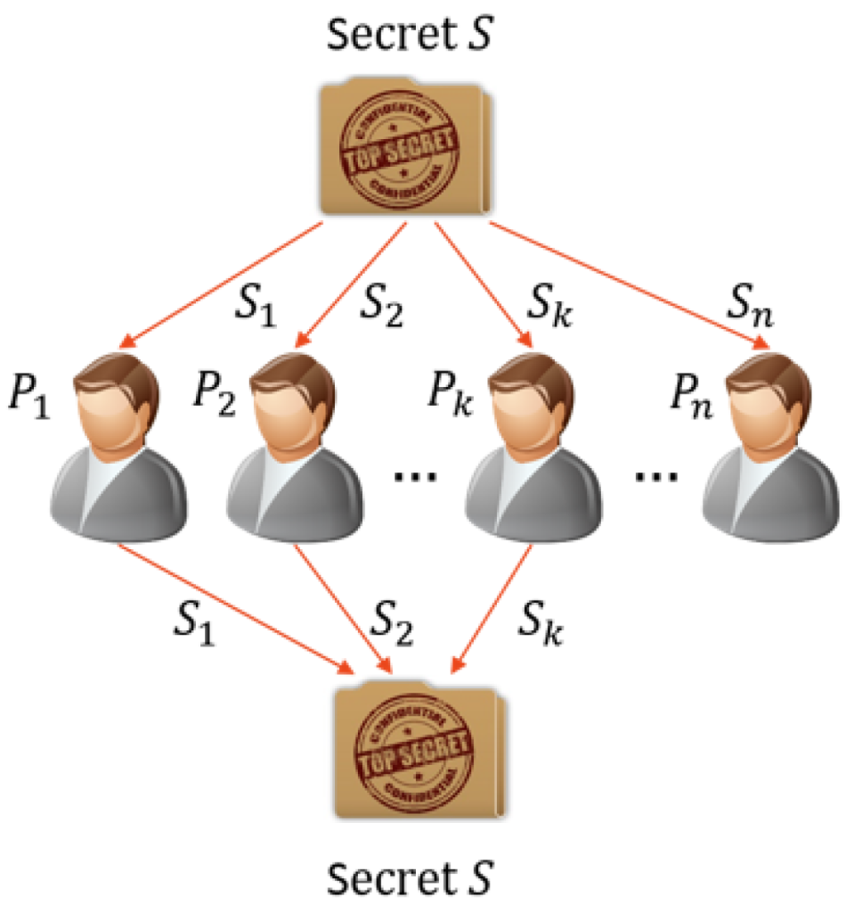
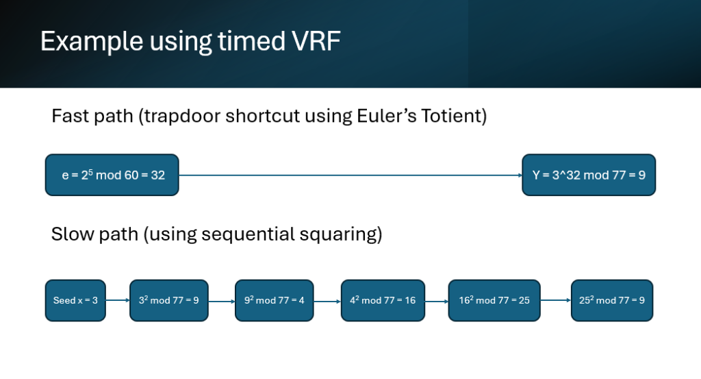

Accountability in Algorand
Overview
As part of my final year research project, I focused on addressing the non-attribution flaw in Algorand's consensus mechanism. The original protocol uses Verifiable Random Functions (VRFs), effectively acting as a lottery to secretly select leaders who are responsible for proposing the next block to be added to the blockchain. The probability of being selected is proportional to the stake held by a node. While VRFs are effective at maintaining secrecy, the system facilitates malicious behaviour such as block withholding (staying silent to stall the chain) as such actions cannot be traced back to the malicious actor.
I introduced Timed VRFs to reveal the selected leader alongside a reputation-based system to disincentivise malicious behaviour such as block withholding and reward honest behaviour. The reputation metric was used as a weight to a node's stake resulting in a "Proof of Effective Stake" system. I then simulated several adversarial models concluding that the system effectively and significantly reduced adversarial behaviour but encouraged reputation-grinding attacks, allowing malicious nodes controlling less than 1/3 of the total stake to have an effective stake of more than 1/3. This means that the Byzantine Fault Tolerance (the maximum proportion of stake which adversaries may control for the system to remain secure) was modified from 1/3 of the total stake to 1/3 of the total effective stake.
Design
Algorand is popular for being a fast, scalable, and decentralised blockchain platform - solving the "Blockchain Trilemma". To bring accountability to Algorand’s consensus without sacrificing its signature speed and anonymity, I explored how to introduce leader revelation to solve the non-attribution flaw—ensuring misbehaving nodes that withhold blocks can be unmasked and penalised. However, to prevent targetted attacks, the identity of the leader had to remain secret until they proposed a block or timed out.
There are three main mechanisms to introduce leader revelation into secret sortition:
- Threshold Cryptography & Secret Sharing: A committee of nodes split a secret key and must cooperate to reconstruct the seed and reveal the leader. While robust, this requires complex interactive communication rounds that introduce heavy network latency and break Algorand's non-interactive philosophy.
- Incentive-Based Key Disclosure: Validators periodically publish private key material after rounds complete, allowing auditors to re-evaluate historical VRF outputs. However, this offers weak real-time accountability if an adversary gains more strategic value from withholding than the financial loss of delayed disclosure.
- Delay-Based Trapdoors (Chosen Approach): Using Verifiable Delay Functions (VDFs) or Time-Lock Puzzles, the leader's identity is locked inside a sequential mathematical puzzle. If the leader acts honestly, they immediately reveal themselves. If they stay silent, the rest of the network can non-interactively "force open" the puzzle after a predictable time delay.

Building on delay-based trapdoors, I designed a hybrid architecture combining VDFs with a dynamic Proof-of-Effective-Stake (PoES) reputation model, splitting consensus into two cryptographic pathways:
- The Fast Path: Honest leaders secretly self-select via Algorand’s standard Verifiable Random Function (VRF) and immediately broadcast their block alongside an instant cryptographic proof as in the standard Algorand protocol.
- The Slow Auditing Path: If a selected leader decides to maliciously withhold a block, non-leader nodes run a strictly sequential VDF math computation (the complexity is configurable, I set this as ~10s delay to provide security against Algorand's ~4s round time). Because VDF evaluation cannot be parallelised, it acts as a time-delay trapdoor that eventually unmasks the withholding leader's identity without requiring multi-party interactions or voluntary key releases.

With this new feature, we can determine who the selected leader was when a block is withheld. However, there is still no disincentivisation of this behaviour. Thus, I introduced a simple reputation system where each node is given a reputation value used to weight the value of the node's stake, impacting its probability of being selected as a leader in the next round. The system must simultaneously penalise persistent malicious behaviour and provide a tolerance for accidental disconnects. Furthermore, it should be resistant to Sybil re-entry/whitewashing attacks where stake is transferred to new nodes with fresh and untarnished reputation.
Implementation
To model and validate the protocol’s effectiveness, I implemented a discrete-event Monte Carlo simulation using Python. The simulation was designed to replicate Algorand's secret sortition process over multiple rounds, allowing for the testing of various adversarial strategies and network conditions. By abstracting the full stack into key variables—stake, reputation, leader selection, and block proposal—the model could evaluate system behaviour under controlled, repeatable conditions. The simulation evaluated the protocol across a range of network sizes and adversarial conditions, running up to 10,000 rounds per trial. The results were used to analyse the impact of the proposed reputation system on network security and efficiency, and to compare the modified protocol against the baseline Algorand consensus mechanism.
The reputation model had several simple features: used a linear increase in reputation for successful block proposals, and an exponential decrease for withheld blocks. The model was designed to be resistant to Sybil and whitewashing attacks, and to provide a tolerance for accidental disconnects.
- Sliding History Window: Each node tracks its last 100 block proposals in a sliding window vector (1 for withholding strike, 0 for successful publication).
- Exponential Penalty Function: Instead of simple linear deductions, penalties scale
exponentially using
P(s) = max(0, 1.5s - 5)wheresis cumulative strikes. This prevents accidental network drops (~5% baseline noise) from destroying reputation while heavily punishing recurring attacks. - Sybil & Whitewashing Defenses: New nodes join with a starting reputation floor of 0.75 and 4 pre-filled strikes, raising the barrier to entry for malicious nodes attempting to discard low-reputation identities and re-enter fresh.
- Adversarial Models: Simulated several threat models including Disruptive (pure withholding/vote stalling), Hegemonic (greedy strategic withholding to maximize re-election), Defaming (tarnish honest nodes via committee voting), and Computational adversaries.
Results
The simulation results demonstrated clear statistical improvements over standard Pure Proof-of-Stake (PPoS):
- Up to 90% Reduction in Block Withholding: Under strategic (hegemonic) attacks, total withheld blocks dropped from 339 in PPoS down to 184 in PoES over 1,000 rounds, while successful block confirmations increased from 618 to 807.
- Rapid Reputation Isolation: Disruptive nodes attempting to stall the network saw their reputation rapidly fall to the minimum floor (0.01), effectively stripping them of leadership and validator selection chances. Honest nodes stabilized cleanly between 0.95 and 1.00.
- Neutralizing Look-Ahead Bias: Strategic withholding to manipulate future VRF seeds became mathematically unviable; malicious win-rates oscillated tightly back down to their fair stake proportion line.
- New Insight on Effective BFT: The research proved that introducing reputation shifts the security boundary: Byzantine Fault Tolerance changes from 1/3 of total stake to 1/3 of total effective stake, demonstrating how reputation metrics must be guarded against computational and defaming exploits.